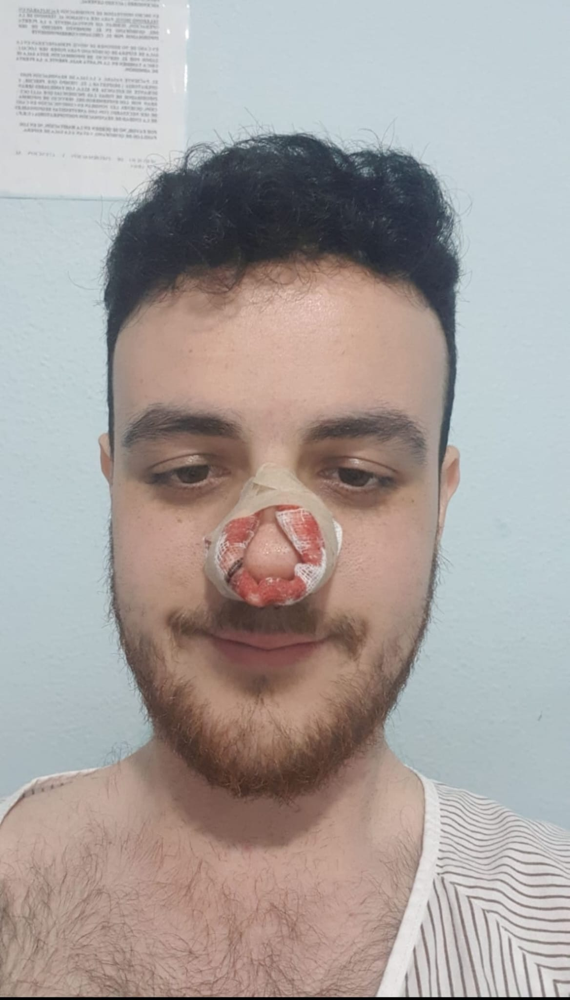

HACE 2 HORAS
La nueva generación ya pide su sitio
Los protagonistas más inesperados también tienen su momento de gloria.
Los grandes equipos continúan preparando sus próximos encuentros mientras la temporada avanza.
Jugadores, entrenadores y aficionados vuelven a ser protagonistas de otra semana de fútbol.
Los protagonistas más inesperados también tienen su momento de gloria.

Algunos recuerdos terminan convirtiéndose en auténticas leyendas.

No todos los protagonistas llegan al final de la temporada de la misma manera.
La sala de videoarbitraje ha confirmado esta mañana una decisión que ya está provocando todo tipo de reacciones entre los aficionados.
Un jugador recibió una tarjeta amarilla... aunque el jugador no estaba sobre el terreno de juego.
Los responsables del VAR han abierto una investigación para determinar qué ocurrió realmente.